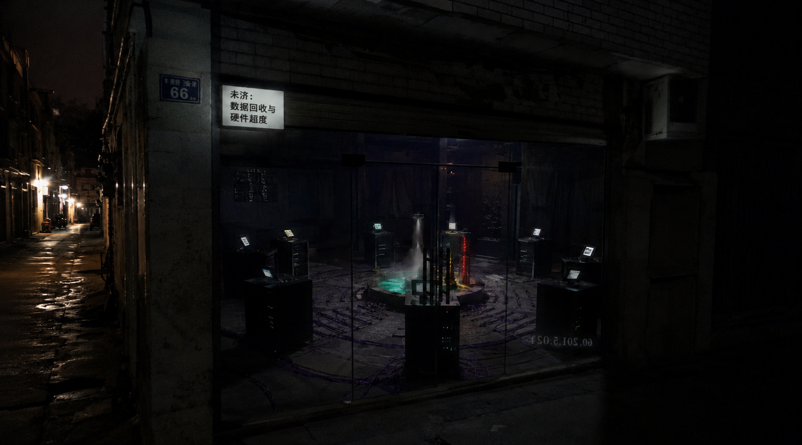

门头连个招牌都没有，只有门牌号旁边挂着个极其突兀的白底黑字小灯箱，上面写着：【未济：数据回收与硬件超度】。
最阴间的是，店门是全透明的玻璃。我往里瞅了一眼，当场冷汗就下来了……感觉完全不像个修电脑的地方，更像是在搞什么邪门阵法。

地上的紫铜线根本不是正常的弱电走线，中间那个水冷排一阴一阳的，机柜上面还全是闪烁的墨水屏。你们帮我看看，这玩意儿到底是什么路数？是我熬夜写代码产生幻觉了吗？
-- Bug写不完，头发掉光光。--
